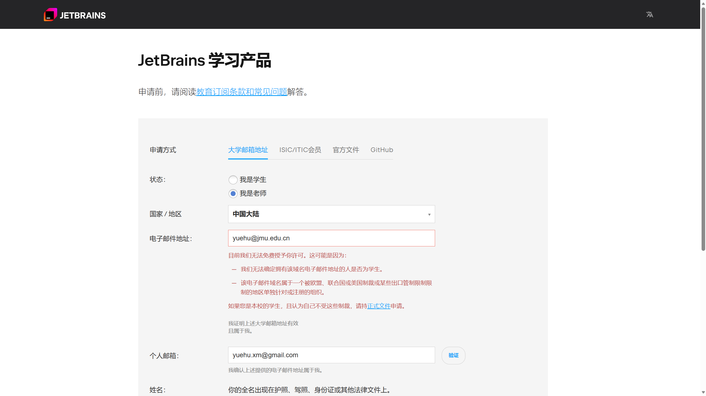
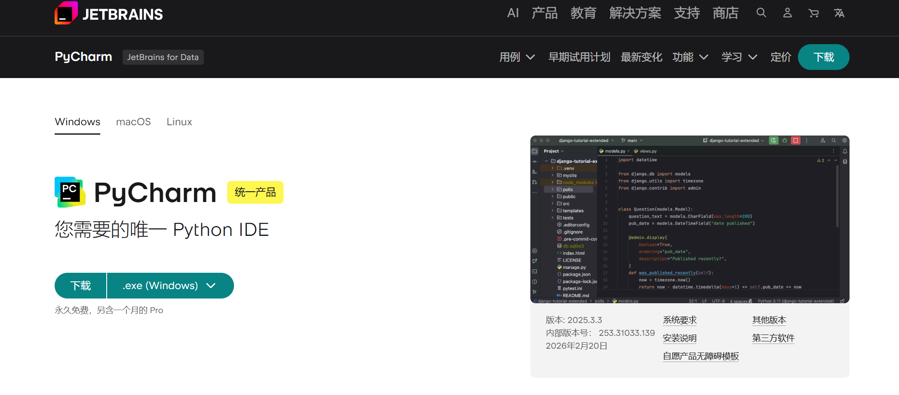
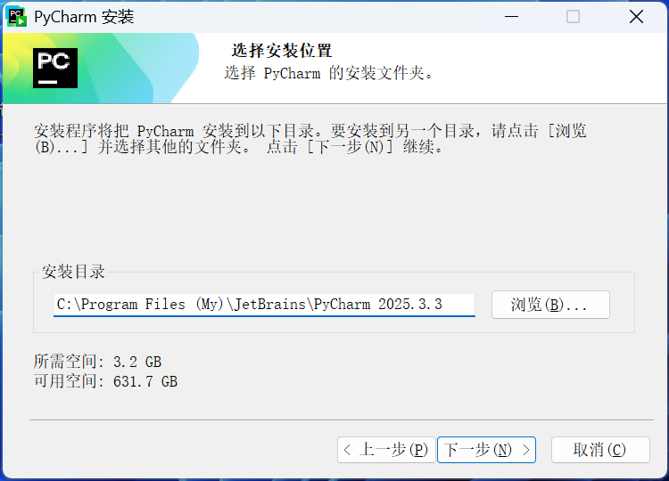
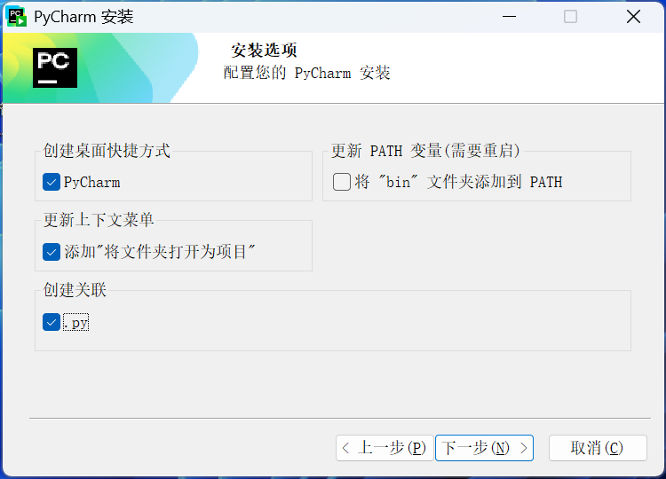

PyCharm 安装与使用指南¶
作者：胡樾 | 记录时间：2026-02-23
目录¶
1. PyCharm 简介¶
PyCharm 是 JetBrains 出品的专业 Python IDE，支持智能代码补全、调试、虚拟环境管理、科学计算、Web 开发等。
- 官网：https://www.jetbrains.com/pycharm/
- 版本：
- Professional（专业版）：付费（可教育免费），支持 Web、数据库、科学计算、Jupyter Notebook、远程调试等高级功能
- Community（社区版）：免费，仅适合纯 Python 基础开发，功能较少
- 推荐使用 Professional 专业版，功能完整，适合科研和开发
2. 卸载已有 PyCharm¶
如果电脑上已有旧版 PyCharm，建议先卸载，避免版本冲突。
2.1 卸载步骤¶
- 打开 "设置 → 应用"（或 "控制面板 → 程序和功能"）
- 搜索
PyCharm，找到后点击 卸载 - 卸载向导中，勾选 "Delete PyCharm caches and local history"（删除缓存和本地历史），确保彻底清理
- 点击 Uninstall，等待完成
2.2 手动清理残留¶
卸载后如仍有残留，手动删除以下目录：
| 目录 | 说明 |
|---|---|
C:\Program Files\JetBrains\PyCharm* |
安装目录 |
C:\Users\你的用户名\.PyCharm* |
旧版配置目录 |
C:\Users\你的用户名\AppData\Roaming\JetBrains\PyCharm* |
配置/插件 |
C:\Users\你的用户名\AppData\Local\JetBrains\PyCharm* |
缓存/索引 |
💡 清理完成后建议**重启电脑**再安装新版。
3. 激活方式一：教育免费申请（推荐）¶
JetBrains 为**在校学生和教师**提供 PyCharm Professional 及全家桶产品的**免费正版授权**，有效期 1 年，可反复续期。
🎓 强烈推荐：如果你是老师或学生，优先使用教育免费授权，正版无风险。
3.1 申请条件¶
- 教师：需要有学校的教育邮箱（如
xxx@jmu.edu.cn）或能提供教师资格/在职证明 - 学生：需要有学校的教育邮箱（如
xxx@stu.jmu.edu.cn）或能提供学生证/在读证明
3.2 教师申请流程（一步步操作）¶

-
打开申请页面
- 访问 JetBrains 教育免费申请页面
- 点击 Apply now
-
选择身份
- 选择 Teacher（教师）
-
填写信息
- Name：填写姓名（拼音或英文）
- Email address：填写你的 学校教育邮箱（如
xxx@jmu.edu.cn） - 如果没有教育邮箱，选择 Official document 方式
- 上传教师证 / 在职证明 / 聘用合同等扫描件
-
提交申请
- 点击 Apply for free products
- 如果使用教育邮箱，会收到一封验证邮件
-
邮箱验证
- 登录你的教育邮箱，找到 JetBrains 发来的验证邮件
- 点击邮件中的 Confirm Request 链接
-
创建/登录 JetBrains 账号
- 如果没有 JetBrains 账号，按提示注册（使用教育邮箱注册）
- 如果已有账号，直接登录并关联
-
获取授权
- 验证通过后，JetBrains 会发送授权确认邮件
- 你的 JetBrains 账号下会自动绑定免费的 Professional 授权
-
在 PyCharm 中激活
- 启动 PyCharm → 选择 Log In to JetBrains Account
- 登录你的 JetBrains 账号
- 自动识别教育授权，激活成功 ✅
3.3 学生申请流程（一步步操作）¶
-
打开申请页面
- 访问 JetBrains 教育免费申请页面
- 点击 Apply now
-
选择身份
- 选择 Student（学生）
-
填写信息
- Name：填写姓名（拼音或英文）
- Email address：填写你的 学校教育邮箱（如
xxx@stu.jmu.edu.cn） - Level of study：选择学历层次（Bachelor / Master / PhD）
- 如果没有教育邮箱，选择 Official document 方式
- 上传学生证 / 在读证明扫描件（拍照清晰即可）
-
提交申请
- 点击 Apply for free products
- 如果使用教育邮箱，会收到一封验证邮件
-
邮箱验证
- 登录你的教育邮箱，找到 JetBrains 发来的验证邮件
- 点击邮件中的 Confirm Request 链接
-
创建/登录 JetBrains 账号
- 如果没有 JetBrains 账号，按提示注册（使用教育邮箱注册）
- 如果已有账号，直接登录并关联
-
获取授权
- 验证通过后，JetBrains 会发送授权确认邮件
- 你的 JetBrains 账号下会自动绑定免费的 Professional 授权
-
在 PyCharm 中激活
- 启动 PyCharm → 选择 Log In to JetBrains Account
- 登录你的 JetBrains 账号
- 自动识别教育授权，激活成功 ✅
3.4 续期¶
- 教育授权有效期为 1 年
- 到期前会收到邮件提醒，按提示续期即可
- 续期条件：仍具有教育身份（在职教师/在读学生）
3.5 注意事项¶
- 教育授权仅限**个人学习和教学用途**，不得用于商业开发
- 授权覆盖 JetBrains 全家桶（PyCharm、IntelliJ IDEA、WebStorm、DataGrip 等）
- 审核周期：教育邮箱通常**几分钟到几小时**，证件上传方式可能需要 1-2 个工作日
4. 激活方式二：破解¶
⚠️ 仅供个人学习使用，商业用途请购买正版。如果你是老师或学生，请优先使用上面的教育免费方式。
https://www.quanxiaoha.com/pycharm-pojie/pycharm-pojie-202533.html
4.1 下载¶
- 访问官方下载页面：https://www.jetbrains.com/pycharm/download/
- 选择 Windows 平台的 Download 按钮
- 下载得到安装包，如
pycharm-2025.3.3.exe
历史版本下载：https://www.jetbrains.com/pycharm/download/other.html

4.2 安装¶
- 双击下载的安装包
- 按提示点击 Next
- 选择安装路径（自定义路径
C:\Program Files (My)\JetBrains\PyCharm 2025.3.3） - 勾选以下选项：
- ✅ Create Desktop Shortcut（创建桌面快捷方式）
- ✅ 将文件夹打开
- ✅ Create Associations →
.py（关联 .py 文件）
- 点击 Install，等待安装完成
- 点击 Finish
安装完成后先不要启动，先准备激活。


5. 首次启动与配置¶
- 启动 PyCharm，选择主题（推荐 Darcula 深色主题）
- 配置 Python 解释器：
- File → Settings → Project: XXX → Python Interpreter
- 点击齿轮图标 → Add Interpreter
- 选择已有的 Anaconda/conda 环境或新建
- 配置代码字体：Settings → Editor → Font（推荐 JetBrains Mono）
- 配置快捷键：Settings → Keymap
- 安装常用插件：Settings → Plugins
- 推荐：Chinese Language Pack（中文包）、Rainbow Brackets、GitToolBox
6. 常用功能与使用技巧¶
| 功能 | 快捷键 / 操作 | 说明 |
|---|---|---|
| 智能补全 | Ctrl + Space |
代码自动补全 |
| 快速跳转 | Ctrl + B |
跳转到定义 |
| 多行编辑 | Alt + Shift + 鼠标 |
同时编辑多行 |
| 查找文件 | Ctrl + Shift + N |
按文件名搜索 |
| 全局搜索 | Ctrl + Shift + F |
全文搜索 |
| 格式化代码 | Ctrl + Alt + L |
自动格式化 |
| 运行代码 | Shift + F10 |
运行当前脚本 |
| 调试代码 | Shift + F9 |
启动调试 |
| 重命名 | Shift + F6 |
安全重命名变量/函数 |
| 注释/取消注释 | Ctrl + / |
行注释 |
其他实用功能¶
- 调试：断点、变量监视、Step Over / Step Into / Step Out
- 虚拟环境管理：直接在 IDE 内创建/切换 conda 或 venv 环境
- Jupyter Notebook 支持（专业版）：直接在 PyCharm 中运行 .ipynb
- Git 集成：版本控制、分支管理、代码对比
- 科学计算视图（专业版）：查看 DataFrame、绘图等
- 数据库工具（专业版）：连接 MySQL、PostgreSQL 等数据库
7. 常见问题¶
Q1：启动慢？¶
- 检查是否装了过多插件，禁用不需要的
- 关闭无用项目
- 增加 PyCharm 内存：Help → Change Memory Settings
Q2：教育免费申请被拒？¶
- 确认邮箱后缀是否被 JetBrains 收录（部分小学校可能未收录）
- 改用「上传证件」方式重新申请
- 检查证件是否清晰、是否在有效期内
Q3：激活/破解失败？¶
- 检查网络是否正常
- 换用最新版本的 JetBrains Agent
- 清理旧的激活信息后重试
Q4：无法识别 Anaconda 环境？¶
- 检查 Anaconda 是否正确安装
- File → Settings → Project → Python Interpreter → 齿轮 → Add
- 选择 Conda Environment → Existing environment → 浏览到 conda 环境的
python.exe - 路径示例：
C:\ProgramData\anaconda3\envs\你的环境名\python.exe